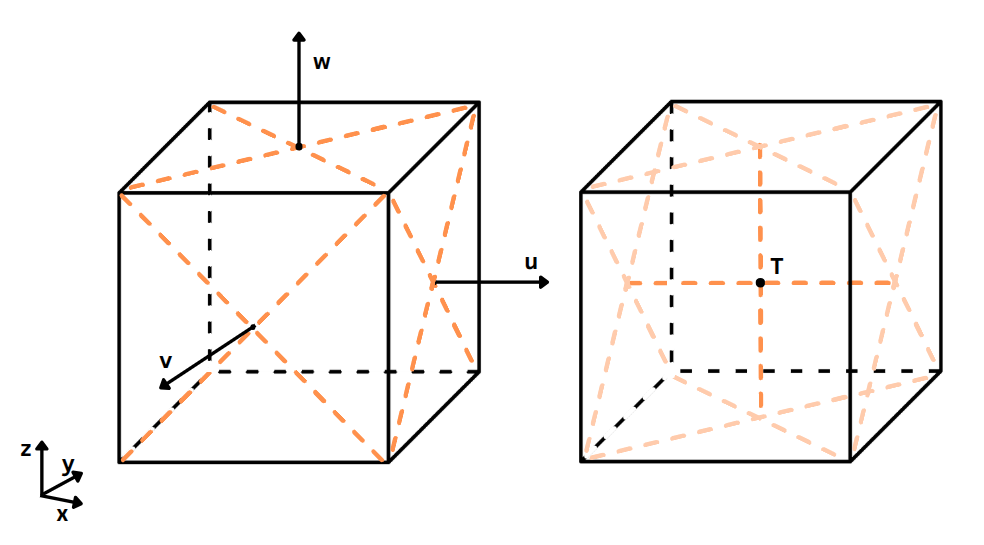
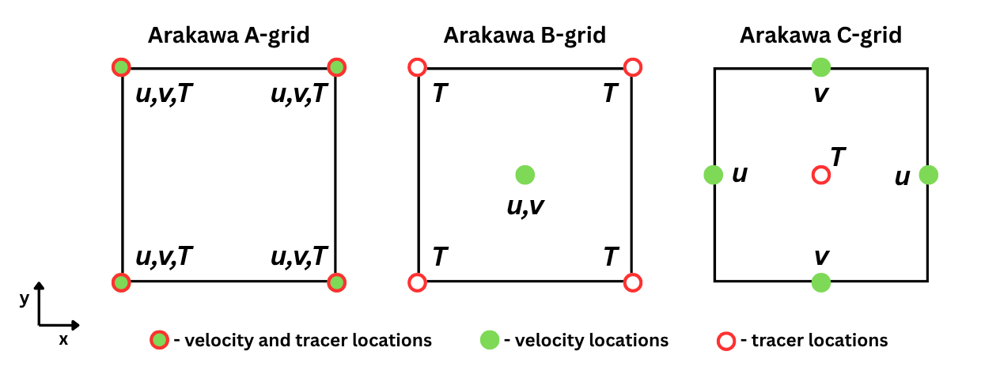

Introduction
In this section we are going to present how to set up the grid for Tracmass and how to transfrom them from typically used grids in climate modelling. It is essential to set up the grid correctly, thus great care needs to be taken into this.
TRACMASS grid
TRACMASS is built on Arakawa C-grid, which keeps the tracer values, such as temperature, salinity, oxygen concentration in the center of the grid cell, while the velocity values are set in the center of the cell's faces. The east-west velocities, typically denoted u are located on the east and west faces of the cell. Etc, for the rest of the velocities. Right below is an ilustration in 3D of Arakawa-C grid setup.

The algorithm for setting up the grid is located in the project's folder in the file setup_grid.F90. The default projects present various method's for setting up the grid for various options. Thus, it is recommended to modify (if necessary) the grid setup algorithm that most closeley resembles the needed grid setup.
Transforming between Arakawa grids
Conceptually, transforming from one grid to another is simple procedure if the original data's grid is known; however, it can be confusing to do it in an efficient way and correctly. Because of this, the more comon transformations from different grids is provided. In the figure below are presented Arakawa-A and B grid layout in 2D.

It is recommended that vertical velocity is calculated by TRACMASS itself; however, it is possible to assign explicitly the values, which would require to read them in as well. It would be necessary to transform them in the same manner as the horizontal velocity values. Thus, here we present the mathematical expression for transforming the tracers and the horizontal velocity onto the C-grid.
Transformation from A to C grid
This is how we do the tracers:
This is how we do the horizontal velocity values:
Transformation from B to C grid
First step is to transform the tracers from the cell's corners to the cell's centers, which means we need to find the average value of all the cell's corner tracers. Mathematically, in 3D this would be done like this:
Next, we need to transform the horizontal velocity field, which is located in the center of the cell in Arakawa B-grid.
Grid setup in projects
In the following subsections the various project's grid setups are looked at in more detail. In general, these three are mandatory to populate:
- dxdy - Area of horizontal cell-walls.
- dzt - Height of k-cells in 4 dim.
- kmt - Number of k-cells from surface to seafloor.
- dyu - length of dy for u flux calculations
- dxv - length of dx for v flux calculations
The following project exaples are ordered from the most basic to the most complex to get a better idea of grid building process. Instead of writing the code from scrathc, it is recomended to find the grid setup that most closeley resembles your model grid setup and use that project as a basis. Make necessary modification and you should be good.
Theoretical
The simplest grid setup is for the Theoretical case. Each of the grid cell's has the size of 250m in horizontal direction (dx, dy) and have a vertical resolution of 10m (dzt). From the grid cell dimensions it is possible to calculate the horizontal grid cell's wall area. FInally, we apply a mask and enable all the points in the grid as avialable for trajectories.
AVISO
Here we manually create the grid with a quarter degree resolution, no bathymetry data is used, I think. We have these variables:
- !kmu
- !kmv
- dx - length of a cell in x direction
- dy - length of a cell in y directio
- dxv(needed) - length of each v-gridcell in x direction
- dyu(needed) - lenfth of each u-gridcell in y direction
- dxdy(needed) - horizontal area of the cell walls
- dzt(needed) - depth or thickness of the vertical cell
We define the grid with quarter degree resolution in horizontal plane (dlon=0.25, dlat=0.25) and we fill in the dxv and dyu, which are used for mass transport calculatoins later on.
IFS (In Progress)
The procedure is nearly identical to the AVISO project grid setup, with a slight difference, that we read in some additional aa and bb variable data, that is later on used for calculatiosn.
ROMS
In this case, most of the grid data is read into TRACMASS. These are the variables that are being populated:
- mask from kmt_name
- dy_t from dy_name
- dx_t from dx_name
- dxdy = dx_t*dy_t
- dyu = dy_t
- dxv = (dx_t*dy_t + dx_t*dy_t)/(dy_t+dy_t) with weird shifts
- depth from dep_name
NEMO
In this case all of the data about the grid is read into TRACMASS.
Other grid setups
UNDER CONSTRUCTION